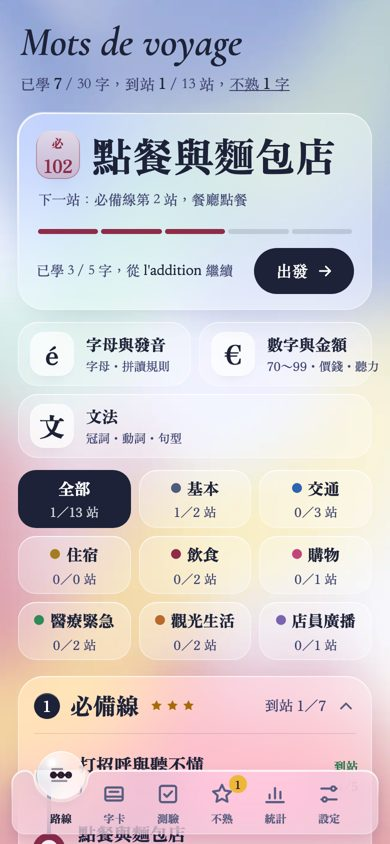
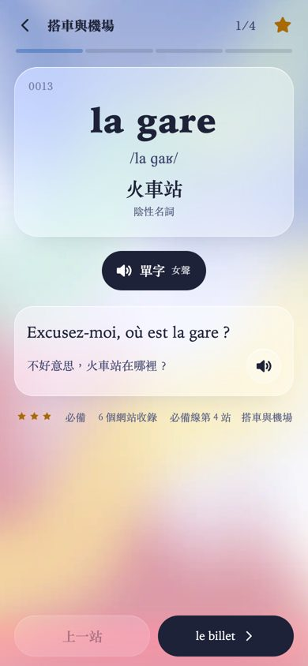
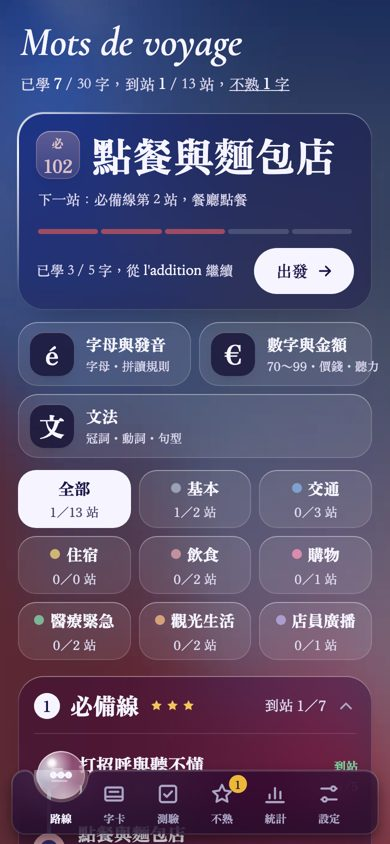
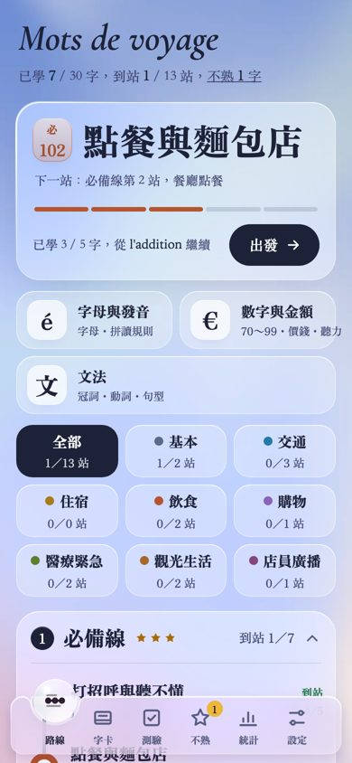
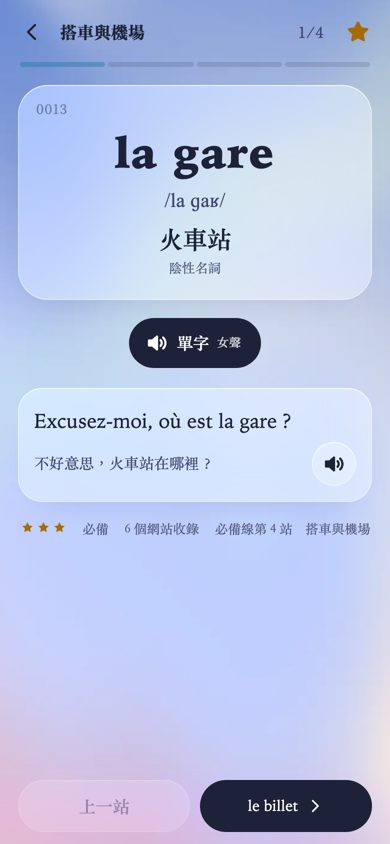
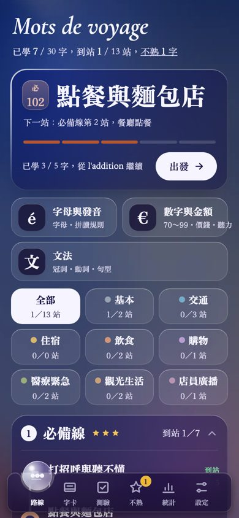
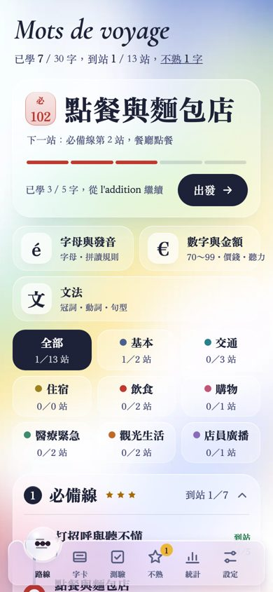
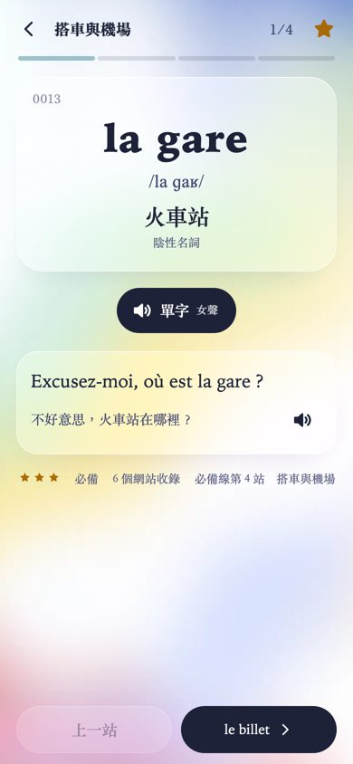
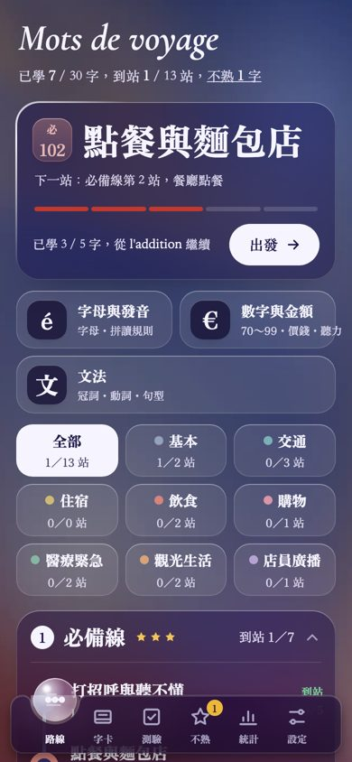

三組都用同一套「暮色玻璃」外觀與法國圖示（白色對話氣泡＋艾菲爾鐵塔、藍白紅色場）。差別在底色（從圖示的藍白紅色場延伸）與八個主題家族的顏色（首頁 3×3 的色點、站號章、路線）。日文版是櫻花粉＋日本傳統色、韓文版是韓國傳統色，這三組都不重複。目前畫面是 30 張樣本字卡。
底色＝藍（上）→珍珠白→紅（下），夾黃綠彩帶，跟圖示一模一樣。家族色：石板屋頂灰藍、地鐵藍、第戎芥末黃、波爾多酒紅、馬卡龍覆盆子、藥局綠十字、紅土赭、薰衣草。



底色以藍為主、往下轉薰衣草與一點玫瑰，最安靜。家族色：灰藍百葉窗、蔚藍海岸、向日葵、陶土、薰衣草、橄欖綠、赭石、葡萄紫。



底色以珍珠白為主，邊緣淡藍淡紅，黃與薄荷彩帶多一點，最明亮。家族色：睡蓮藍、塞納河青、麥草黃、罌粟紅、玫瑰、柳綠、黃昏橘、紫丁香。


